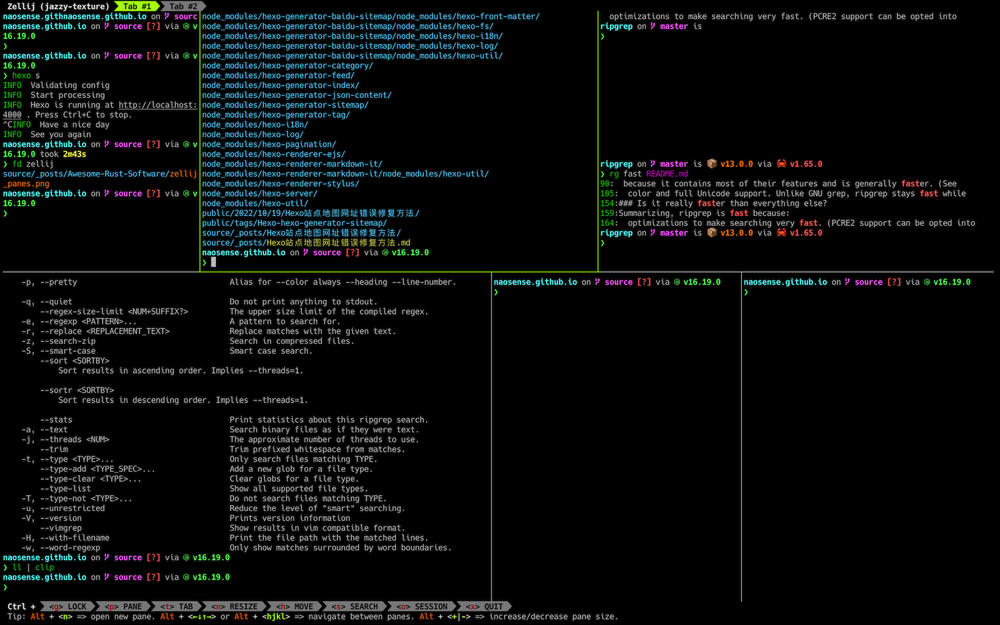
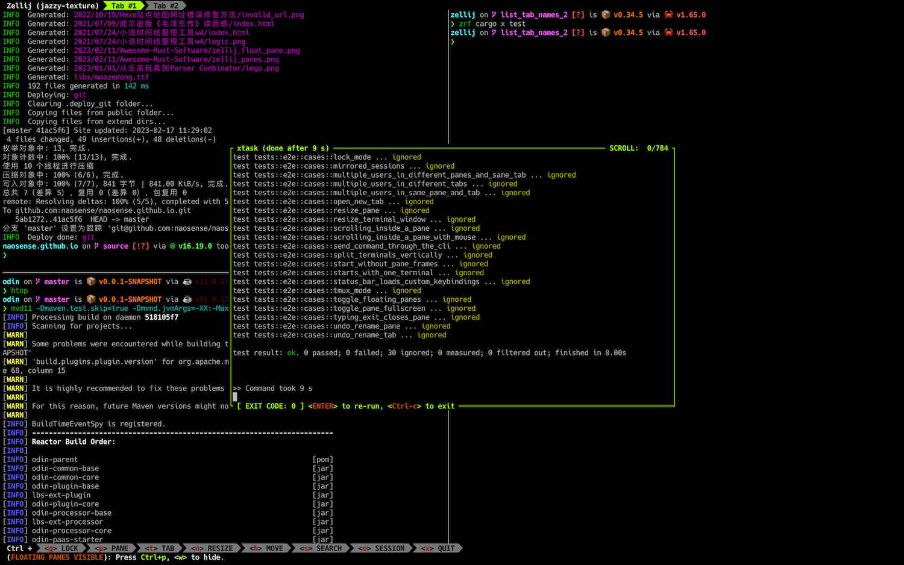

Awesome Rust Software
本文将会持续推荐一些我使用过感觉不错的rust软件，尽情期待！
fd
fd号称A simple, fast and user-friendly alternative to ‘find’。可见fd相比find一是快，二是使用友好。根据作者的benchmark，fd字面量搜索和正则表达式搜索分别是find的5倍和9倍，除了快，它的使用更简单，更符合直觉。
说到find命令的功能强大，相信很少有人能够否认，但是要是说到它的用法难记，相信很多人都能感同身受。以大家使用find最多的场景为例，查找文件夹中某个名字的文件，通常这个名字也记不太完整，需要模糊搜索。在find中需要
find -iname '*PATTERN*'
而fd只需要
fd PATTERN
可以看到fd默认就是针对文件名的模糊搜索，可能看起来二者区别也没那么大，但是我每次用find都得百度一番，不知道我是不是个例，我觉得之所以这样就是因为find缺少符合直觉的默认选项，一个工具如果你时时刻刻都在用，它繁琐一些可能不是个事，但是如果你只是偶尔或者不那么经常用，一个符合直觉的默认选项就显得尤为重要了。
其他一些常用方法：
1、使用正则表达式
fd '^x.*rc$'
2、默认搜索当前文件夹，可以这样指定文件夹
fd passwd /etc
3、使用-e指定文件类型
fd -e md
fd -e rs mod
4、使用-g精确匹配
fd -g libc.so /usr
5、使用-H和-I包含隐藏和忽略的文件。默认fd是不搜索隐藏文件和.gitignore忽略的文件的，可以同时启用两者-HI
fd -H pre-commit
fd -I num_cpu
6、使用-p匹配路径。默认fd只匹配文件名
fd -p -g '**/.git/config'
fd -p '.*/lesson-\d+/[a-z]+.(jpg|png)'
7、使用-x对单个匹配结果执行命令，-X对所有结果批量执行命令
fd -e zip -x unzip
fd -g 'test_*.py' -X vim
8、使用-E排除某些文件
fd -H -E .git …
fd -E '*.bak' …
ripgrep
ripgrep recursively searches directories for a regex pattern while respecting your gitignore
ripgrep的优势之一也是快，根据作者自己的benchmark，在小文件上是grep快8倍，在大文件上是grep的3倍。更加重要的是，它和fd一样，也有一个更符合直觉的默认选项。
先来个quick start，使用rg搜索自己工程的README，
> rg fast README.md
90: because it contains most of their features and is generally faster. (See
105: color and full Unicode support. Unlike GNU grep, ripgrep stays fast while
154:### Is it really faster than everything else?
159:Summarizing, ripgrep is fast because:
164: optimizations to make searching very fast. (PCRE2 support can be opted into
而grep的输出是这样的，
> grep fast README.md
because it contains most of their features and is generally faster. (See
color and full Unicode support. Unlike GNU grep, ripgrep stays fast while
### Is it really faster than everything else?
Summarizing, ripgrep is fast because:
optimizations to make searching very fast. (PCRE2 support can be opted into
可以看到，和fd一样，ripgrep默认也是模糊搜索，打印匹配的行，同时还会带上行数。
rg大部分请求使用起来和grep差不多，一些常用的选项如下：
1、正则表达式
rg 'fast\w+' README.md
2、递归搜索当前文件夹中的所有文件
rg 'fast'
3、使用-t指定文件类型
rg 'fn run' -trust
4、使用-w精确搜索word
rg fast -w README.md
5、使用--no-ignore搜索.gitignore忽略的文件，-.搜索隐藏文件，-a搜索二进制文件，还有一个更简化的选项-u，-u包含所有被忽略的文件，-uu会再加上隐藏文件，-uuu会再加上二进制文件
6、使用-g设置文件过滤规则
# 只搜索toml文件
rg clap -g '*.toml'
# 搜索除toml之外的文件
rg clap -g '!*.toml'
# -g可以出现多次
rg clap -g '!*.toml' -g '*.rust'
7、使用-r进行替换
rg fast README.md -r FAST
8、使用-c只打印匹配次数
rg -c fast
zellij
相信很多人之前都用过tmux，我自己也尝试过，但是被它繁琐的快捷键劝退。后来也忘了从哪里听说了zellij，尝试之后发现最吸引我的一点是它有个功能QuickNav，会根据你所处的上下文，将可能的快捷键展示出来，非常适合忘性比较高的人。另外，zellij的面板可以无限切分，你甚至可以切分出来下面这种不规则的界面，

它还支持浮动面板，非常适合一些临时的、一次性的命令运行，

习惯tmux的人也不用担心，它有个tmux模式，快捷键和tmux里基本相同。它是用rust软件开发的，得益于rust语言本身的安全性，高性能，以及活跃的社区，这些特性可以说是唾手可得的free lunch。相比tmux，它的界面更年轻，更现代，开发更活跃，当然这并不意味着zellij还处于“蛮荒”时期，相反它已经具有相当的可用性，支持tmux类似的session、tab、pane、plugin概念，基本可以作为tmux的平替软件。
zellij的维护者都非常nice，择善而从又不失自己的原则，特别是Aram Drevekenin、har7an，zellij更年轻，更活跃，意味着你有机会和它一起成长，一起见证、推动、或者参与一些激动人心的功能的加入，尝试一下，你不会后悔！